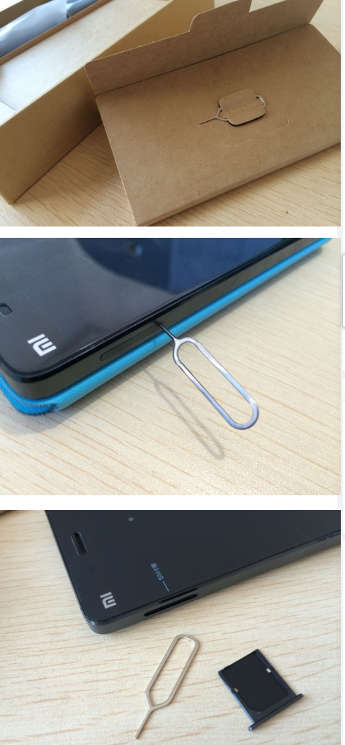
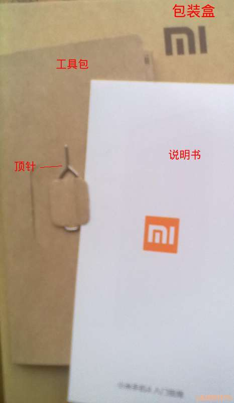
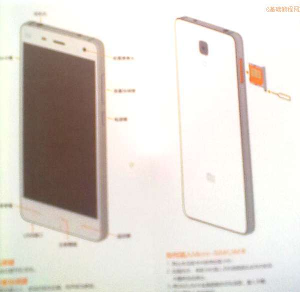
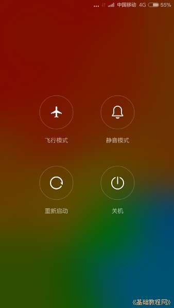
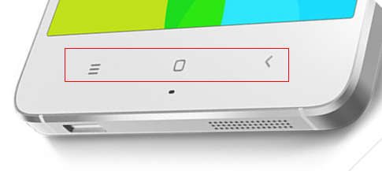

小米4手机操作指南玩家手册
作者：TeliuTe 来源：基础教程网
一、安装手机卡 返回目录 下一课打开包装盒，取出手机，找到放说明书的小包，拿出取卡针和说明书；
1、安装手机SIM/UMI电话卡
1）在包装盒内找的说明书的薄薄的小盒，里面有说明书和顶针(图片来自小米社区)；

电话卡槽在手机左侧，用取卡针（顶针）顶一下卡托下边的圆孔，弹出卡托放入小卡，卡的金属面向手机背面

2）开机电源键在手机右侧第二个短一些的金属按钮，按住3秒钟屏幕闪亮后轻轻松开；

3）长时间按住电源键，可以关机或重启动，还可以切换到飞行模式或者静音；

4）手指从下面向上滑动解锁，屏幕下边中间是主按钮，用手指轻按可以回到屏幕，旁边右侧是返回按钮，轻按可以关闭打开的程序；

5）屏幕下边的左边是菜单键，轻按可以显示当前打开的应用程序，点叉按钮，可以关闭所有程序，按住程序向上滑可以关闭单个程序，往下滑可以锁定不让关闭，
长按菜单键可以调出桌面设置菜单，增加图标小工具，添加/删除桌面；
6）手机充电口在下边的梯形小USB口，按照插口的形状插入，正着插不进去就换个方向再插；
7）手机右侧边上面有一个长条金属按钮是音量键，按它上边是调大音量，按下边是减小音量；
8）同时按住音量减小和电源键3秒钟，可以截图，保存到手机存储卡的DICM文件夹里；
9）到小米之家或其他手机店给屏幕贴一层膜，再买一个手机保护套，；
本节学习了的基础知识，如果你成功地完成了练习，请继续学习下一课内容；
本教程由86团学校TeliuTe制作|著作权所有
基础教程网：http://teliute.org/
美丽的校园……
转载和引用本站内容，请保留作者和本站链接。